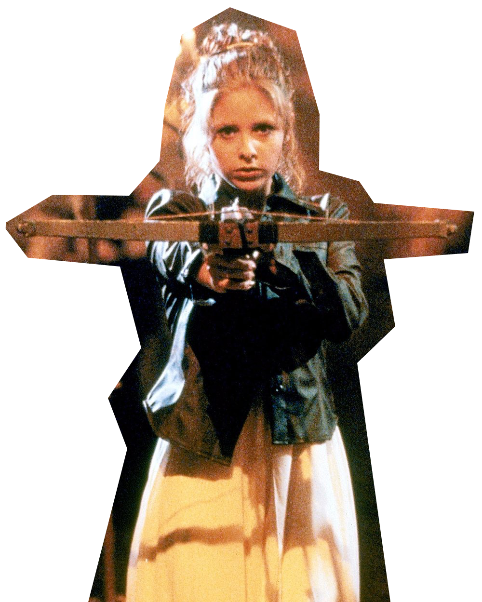
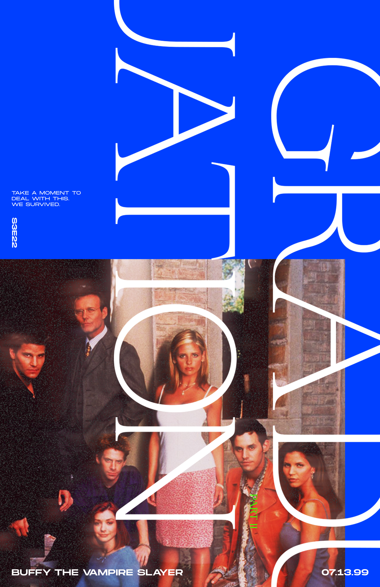

BUFFY THE VAMPIRE SLAYER

"Buffy the Vampire Slayer is an American television series created by writer and director Joss Whedon, which aired from 1997–2003. It featured the exploits of the Slayer Buffy Summers and her group of friends, the Scooby Gang, as they protected Sunnydale from vampires, demons, and the forces of darkness." (Fandom.com)
Who is Buffy?
"I may be dead, but at least I'm still pretty."(S1E12:Prophecy Girl)
Buffy Anne Summers is the title character of the Buffy the Vampire Slayer franchise. She first appeared in the 1992 film Buffy the Vampire Slayer before going on to appear in the television series and subsequent comic book of the same name. The character has also appeared in the spin-off series Angel, as well as numerous non-canon expanded universe material, such as novels, comics, and video games. Buffy was portrayed by Kristy Swanson in the film, and later by Sarah Michelle Gellar in the television series. (Wikipedia.org)
Buffy Anne Summers was a Slayer activated in the late 20th century. Born on January 19, 1981, she was called to be the Slayer in 1996 at the age of fifteen. Buffy was originally living in Los Angeles; but, due to an incident involving a gang of vampires at Hemery High School, she moved to Sunnydale with her mother. There, she acted as guardian of the Hellmouth for seven years before the town's destruction in mid-2003.
Initially a reluctant hero who constantly wished for nothing more than a normal life, Buffy eventually grew to embrace her destiny. Buffy was unique as a Slayer in many ways; she refused to sacrifice her ordinary life for her supernatural destiny, often operated as part of a team with her friends the Scooby Gang, and had romantic relationships with notorious vampires Angel and Spike.
Scooby Gang
The "Scooby Gang" consists of...
Season 1&2
- Buffy Summers
- Willow Rosenberg
- Xander Harris
- Rupert Giles
Season 3
- Buffy Summers
- Willow Rosenberg
- Xander Harris
- Rupert Giles
- Cordelia Chase
- Oz
- Angel
Season 4
- Buffy Summers
- Willow Rosenberg
- Xander Harris
- Oz
- Tara Maclay
- Riley Finn